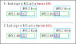
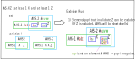
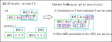

AHS
AHS（Almost Hidden Set）は 、House内の候補数字とセルの制約で生じる部分集合です。ALS と対になる制約です。
(1)AHS
Locked Set は、同じhouseに属する"n個のセルにn個の候補数字がある"状態で、
どのセルがどの数字かは決まらないが、全体としてLocked状態です。
AHS は同じhouseに属する "n+1個のセルにn個の候補数字"がある ほぼ Locked 状態です。
AHSを構成する 1 セルを除くと確定し、AHSは LockedSetになります。
最小のAHSは、"2セル1候補数字"です。
このHPでは、次のように簡略化した AHS表現 も用います。
(2) RCC,nRCC
AHSを用いる解析アルゴリズムでは、2つのAHSの 共通のセルと数字が制限する効果を利用します。
2つのAHSが重なるとき、AHSのセルを分類します。AHSの重なる部分のセルは RCC(Restricted Common Cell)です。
また、AHSのRCC以外のセルは nRCC(no Restricted Common Cell)です。
RCCには複数のセルがあります。それぞれのセルは、2つのAHS 由来の候補数字を含みます。
ただし、単純にするために、最初は RCCのセルが1つの状態について 定義します。
2つのAHSの候補数字は、両者に共通の候補数字と、それぞれに固有の候補数字の場合があります。
したがって、RCCのセルでも 候補数字が 共通 / 固有 の組み合わせが生じます。
RCC-セルは、次のように "X"と"Z"に分類します。
| X | 2つのAHSの候補数字が異なる、あるいは2つのAHSには同じ候補数字をあるが RCC-セル には同じ候補数字がない。 |
| Z | RCC-セルに、共通由来の候補数字がある。（"X"でないものは "Z"） |

上の図では、RCC内のセルを1セルとしていますが、RCC-セルは1～3セルの場合があります。
また、RCC内のセルは、X と Z が様々に混在しています。
解析アルゴリズムとなるのは、これらの特定の組み合わせの場合です。
解析アルゴリズム
AHS-XZ は、数独アルゴリズムの中ではやや変わり種ですが、単純な論理です。GNPXのソースコードは参考になるでしょう。
(1) AHS_XZ
AHS_XZ は、RCCに 1以上の X と 1以上の Z がある状態です。
除外ルール:
1) Zセルの AHS以外の候補数字は除外できる。
- RCCで 何らかの方法で Z セルが無効になったとする (例えば、AHS外の要素が肯定となる、など）。
- 一方の AHS は LockedSet となり、他方の AHS ではセルが不足する。

(2) AHS_XZ_double
AHS-XZ double は、RCCに 2以上のX がある状態です。
除外ルール:
1) Zセルの AHS以外の候補数字は除外できる。
- RCC(最小で2セル)で 何らかの方法で Z セルが無効になったとする。
- 一方の AHS は LockedSet となり、他方の AHS ではセルが不足する。
2) nRCCにある 他方のAHSの候補数字は、除外できます。
- これは、X が2つ以上あることを利用しています。
- (RCCに X が2つの場合) nAHS-1 において、仮に AHS-2 の候補を 肯定とする。
- このセルが除外されて、AHS-1 は LockedSet になる。
- AHS-2 のセル数は 2(RCCのセル数)だけ減る。しかし、X が２つあることで AHS-2 の候補数字は減らない。
- したがって、AHS-2 は "N 数字 N-1(=N+1-2) セル"となり、破綻する。

Example
 (ID:01_5) AHS-XZ
(ID:01_5) AHS-XZ
AHS1: r7c45 r8c5 #38
AHS2: r278c5 #39
X(RCC): r78c5 X: r8c5 Z: r7c5
r7c5#26 is negative
568914372.79..8.513..75..986.75492.3.5.8.3..7..3.71..574...5...13.4.75..8951..734
 (ID:01_5) AHS-XZ double
(ID:01_5) AHS-XZ double
AHS1: r567c7 #18
AHS2: r56c78 #469
X(RCC): r56c7 X: r56c7 Z: r56c7
r5c8#1 r6c8#8 is negative
568914372.79..8.513..75..986.75492.3.5.8.3..7..3.71..574...5...13.4.75..8951..734
 (ID:01_102) AHS-XZ
(ID:01_102) AHS-XZ
AHS1: r5c4 r6c45 #23
AHS2: r6c1457 #357
X(RCC): r6c45 X: r6c5 Z: r6c4
r6c4#48 is negative
697..3.45813..52964526...3727....3.8........2..1....6973...2.81.241...73168537924
 (ID:01_103) AHS-XZ double
(ID:01_103) AHS-XZ double
AHS1: r3456c6 #568
AHS2: r5c56 r6c456 #1237
X(RCC): r56c6 X: r56c6 Z: r56c6
r5c5#58 r6c4#9 r6c5#8 is negative
783..9.614593612876127....3237...1...41....2..65....34398..76421268943755746..819